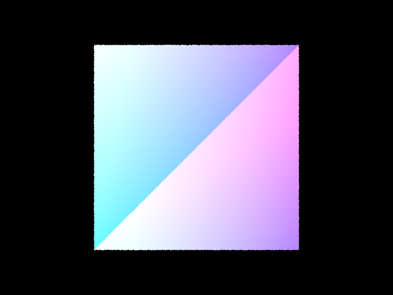

maxplanck:
 0.3 seconds
0.3 seconds
lucy:
 0.1 seconds
0.1 seconds
In order to generate the ray, the pipeline starts with the image coordinates (x, y) in Image Space. We created a 3x3 transform based on inverse mapping a set of linear equations from points in the spec (creating matrices for mapping center (0.5,0.5)->(0,0), bottom corner (0,0)->(-tan(0.5*hFov, -tan(0.5*vFov))), etc.). Then, we multipled the ray's x, y to camera space by matrix multiplying with the transform matrix. Finally, we multiply by c2w to change the direction vector to worldspace, and then normalize it. Finally, we create a ray based on the camera pos and calculated direction vector, set the min_t and max_t to nClip and fClip, and then return that ray. From there, we update the pixel in a SampleBuffer with the integral of radiance over the pixel. To make this integral estimation, we loop num_samples number of items, generate a sample, create a newX and newY, which are the translated coordinates of the sample. Then, we sum a vector with all of these values passed into est_radiance_global_illumnation, and return the average vector after updating the samplebuffer pixel. image coords -> ray in world space (generate_ray) -> update pixel in SampleBuffer w/ integral of radiance over pixel
Sphere intersection: The main functionality about ray-sphere intersection was based on the lecture slides 9-21. We are testing if a ray intersects a Sphere by creating float values a, b, c, and temp, where temp = the quadratic formula equation. The first hypothetical ray sphere intersection is at -b + sqrt(...), and the second hypothetical intersection is at -b - sqrt(...); then we assign the inputted double pointers t1 and t2 to the corresponding min(first, second) and max(first, second) respectively, and return true. If the value b^2 - 4ac < 0, then we know that there is no intersection between the ray and sphere, so we return false. If there is an intersection, then we set the Intersection *i data: n (normal) with equation ray's origin + t*ray's direction - center of sphere location (the normalized vector pointing from the sphere center to the intersection point) primitive, bsdf, and t.
In order to do ray-triangle intersection, we used the Moller Trumbore algorithm to calculate E1, E2, S, S1, and S2, essentially the barycentric coordinates of the ray's intersection with the triangle. Based on these values, we output the vector of params [t, b1, and b2]. Finally, we compare that ray's parameterization, t, ensuring many conditions, such as being >= 0, being between min_t and max_t. If these conditions hold, we know that the ray intersects with the triangle. If there is an intersection, we now set the parameters of the ray and the intersection. For the ray, we update its max_t parameter to equal t (the nearest interesction), so that we can limit the space of future interesctions that we check. For the interesction, we update its t value, its normal as a weighted sum of the 3 vertice's normals, the primitive, and the bsdf. Finally, we are able to render the CBempty.dae room, so that the walls and ceiling are existent.
CBspheres:
Cube:

plane:
Our BVH construction algorithm started by creating a single BVH node (the root node). THen, we used recursion to build up the tree.
The recursive case was if the count of vector of Primitives was less than the max_leaf_size, then we would set the start and the end of
a BVHnode to that vector's start and end, and return the node. In the recursive case, we first find the best axis to split on by
a simple for loop that increments 3 counters (aboveX, aboveY, and aboveZ) for a Primitive if its x, y, and z centroid coordinates are above
the bounding box's centroid coordinates. Then, we take each counter, and calculate a temp value: aboveX - (total_count - aboveX) for each axis, in order to see
which axis is the most "balanced" (most balanced for us is the temp value closest to 0). Then, we create 2 new vector of Primitive pointers left and right.
For the selected axis, we iterate over the entire inputted vector of Primitives, and assign each Primitive pointer to left if its centroid is less than
the bounding box's center for that axis we chose, and right if its centroied is larger than the bounding box's center for the axis we chose.
The heuristic we chose for picking the spliting point was the axis with the most "even split", as we wanted the left and right split to give us the
most information gain.
One thing we noticed was that we were initially segfaulting, and that was because we didn't handle the case where one of the children nodes remains empty
(left is empty || right is empty). To alleviate this issue of infinite recursion, we checked if either vector is empty, and moved a Primitive from the "full"
side to the empty.
Cow:
0.03 seconds
maxplanck:
0.3 seconds
lucy:
0.1 seconds
With BVH acceleration, it took 0.03 seconds for cow, 0.3 seconds for maxplanck, and 0.1 seconds for lucy.
Without BVH acceleration, it took 5 seconds for cow, 47 seconds for maxplanck, and 232 seconds for lucy.
Clearly, there was a huge difference in the time it took to render with and without BVH acceleration; using BVH acceleration, the cow image rendered
~166 times faster, the maxplanck rendered ~16.6 times faster, and the lucy image rendered ~2320 times faster. Based on our results, this shows that
the BVH acceleration GREATLY helps speedup the rendering of images with many triangles-- for example, the lucy image has hundreds of thousands of triangles,
and the speedup gain from BVH acceleration is greatly bigger than the maxplanck image, which only has tens of thousands of triangles.
Direct Lighting with Uniform Hemisphere Sampling
Direct Lighting by Importance Sampling Lights